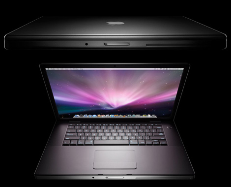

Apple Inc., formerly Apple Computer, Inc., is an American multinational corporation headquartered in Cupertino, California that designs, develops, and sells consumer electronics, computer software and personal computers. Its best-known hardware products are the Mac line of computers, the iPod music player, the iPhone smartphone, and the iPad tablet computer. Its software includes the OS X and iOS operating systems, the iTunes media browser, the Safari web browser, and the iLife and iWork creativity and production suites. The company was founded on April 1, 1976, and incorporated as Apple Computer, Inc. on January 3, 1977. The word "Computer" was removed from its name on January 9, 2007, reflecting its shifted focus towards consumer electronics after the introduction of the iPhone. Apple is the world's second-largest information technology company by revenue after Samsung Electronics, and the world's third-largest mobile phone maker after Samsung and Nokia. Fortune magazine named Apple the most admired company in the United States in 2008, and in the world from 2008 to 2012. However, the company has received criticism for its contractors' labor practices, and for Apple's own environmental and business practices. As of November 2012, Apple maintains 394 retail stores in fourteen countries as well as the online Apple Store and iTunes Store. It is the second-largest publicly traded corporation in the world by market capitalization, with an estimated value of US$414 billion as of January 2013. As of September 29, 2012, the company had 72,800 permanent full-time employees and 3,300 temporary full-time employees worldwide. Its worldwide annual revenue in 2012 totalled $156 billion.
First New: Iphone
 The iPhone 5 is a touchscreen-based smartphone developed by Apple Inc.. It is the sixth generation of the iPhone and succeeds the iPhone 4S. The phone is a slimmer, lighter model that introduces a higher-resolution, 4-inch screen to the series with 16:9 widescreen aspect ratio. The phone also includes a custom-designed ARMv7 processor called the Apple A6, an update to Apple's mobile operating system known as iOS 6, and support for LTE.
To Know More Click on Iphone's Image.
The iPhone 5 is a touchscreen-based smartphone developed by Apple Inc.. It is the sixth generation of the iPhone and succeeds the iPhone 4S. The phone is a slimmer, lighter model that introduces a higher-resolution, 4-inch screen to the series with 16:9 widescreen aspect ratio. The phone also includes a custom-designed ARMv7 processor called the Apple A6, an update to Apple's mobile operating system known as iOS 6, and support for LTE.
To Know More Click on Iphone's Image.
Second New: IpadMini
The iPad Mini (stylized and marketed as iPad mini) is a mini tablet computer designed, developed, and marketed by Apple Inc. It was announced on October 23, 2012, as the fifth major product in the iPad line and the first to feature a reduced screen size of 7.9 inches, in contrast to the standard 9.7 inches. It features similar internal specifications to the iPad 2, including its display resolution. It was released on November 2, 2012 in nearly all of Apple's markets.
Speculation about the iPad Mini began as early as April 2012, as competition rose from 7" devices such as the Kindle Fire HD and the Nexus 7. Rumors initially suggested it would feature a 7.85" display at 1024 × 768 pixels. It was originally thought to be announced at the Apple Special Event on September 12. On October 16, 2012, Apple announced a media event scheduled for October 23 at the California Theatre in San Jose, California.The company did not predisclose the subject of the event, but it was widely expected to be the iPad Mini. On the day of the event, Apple CEO Tim Cook introduced a new version of MacBook family and new generations of the MacBook Pro, Mac Mini, and the iMac before the fourth-generation iPad and the iPad Mini.
Third New: Apple MacBook Pro Laptop
 Processor 2.4GHz dual-core Intel Core i5 L3 cache 3MB shared Memory 4GB (two 2GB SO-DIMMs) of 1333MHz DDR3 SDRAM; supports up to 8GB Hard drive 500GB Serial ATA; 5400 rpm Slot-loading optical drive 8x Super Drive (DVD±R DL/DVD±RW/CD-RW) Graphics Intel HD Graphics 3000 processor with 384MB of DDR3 SDRAM shared with main memory Video Face Time HD camera; Thunderbolt port with support for DVI, VGA, dual-link DVI, and HDMI (requires adapters, sold separately) Display 13.3-inch (diagonal) LED-backbit glossy widescreen display, 1280-by-800 resolution Expansion One Thunderbolt port (up to 10 Gbps), one Fire Wire 800 port (up to 800 Mbps), two USB 2.0 ports (up to 480 Mbps), SDXC card slot Audio Stereo speakers with sub woofers, omnidirectional microphone, audio line in mini jack (digital/analog), audio line out/headphone mini jack (digital/analog) Networking Built-in 10/100/1000BASE-T (Gigabit) Ethernet Wireless Air Port Extreme Wi-Fi (based on IEEE 802.11n specification)2; Bluetooth 2.1 EDR (Enhanced Data Rate) wireless technology.